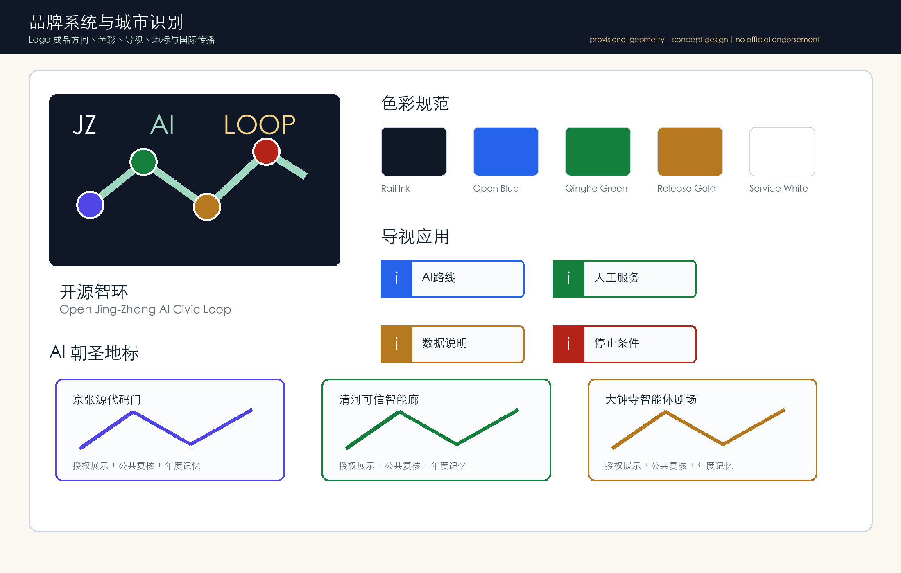
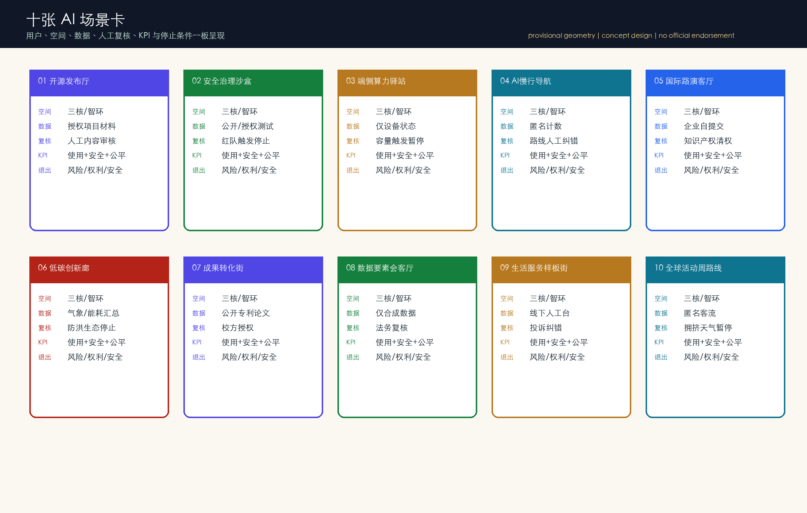
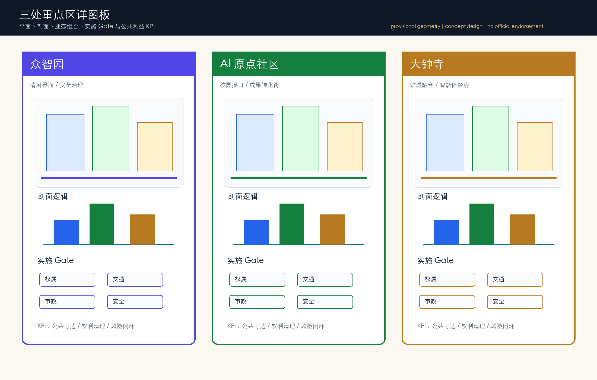
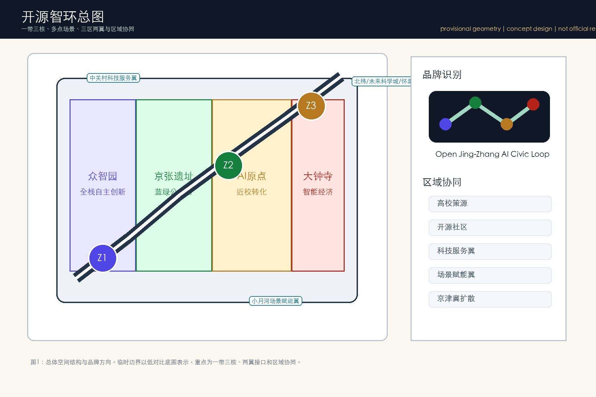
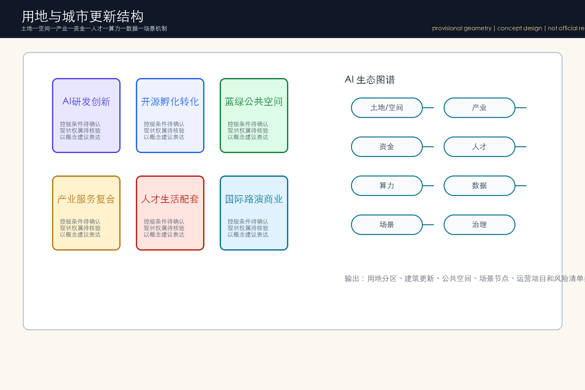
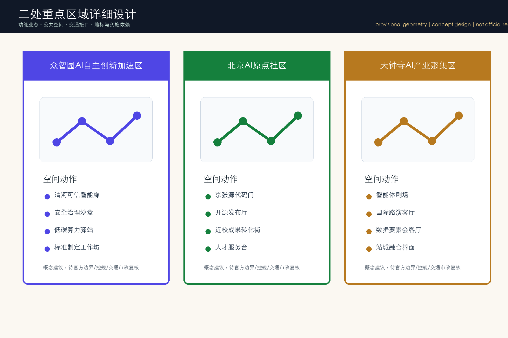
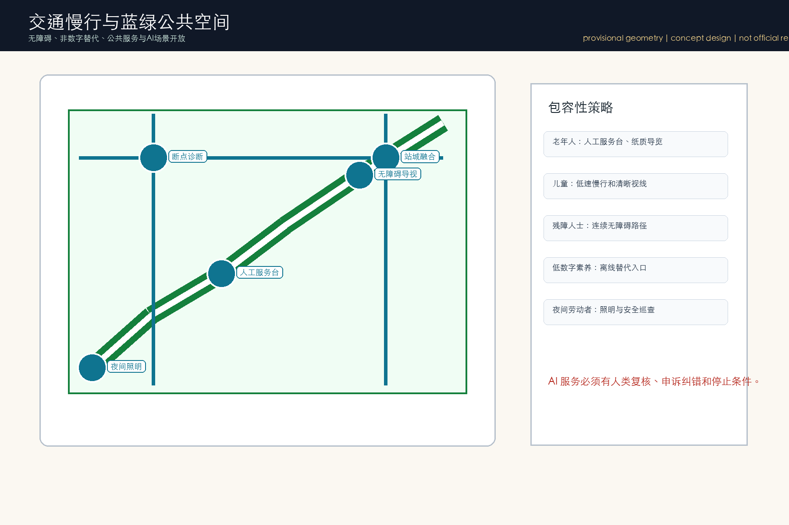
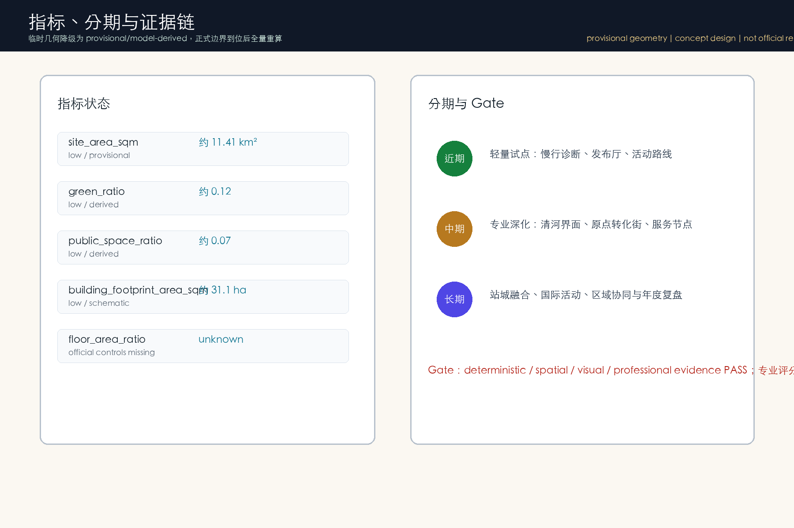
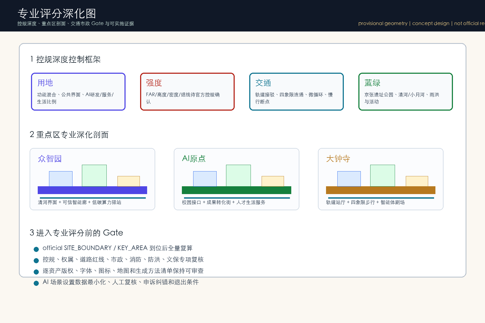

开源智环：百年京张AI创新带城市设计方案
基于 provisional boundary 和结构化自检要求生成的 formal AI 城市设计方案包；保留精度警示和复算要求，但组织方数据缺口不阻断内容评分。
开源智环：百年京张AI创新带城市设计方案
本方案以“开源智环 Open Jing-Zhang AI Civic Loop”为参赛主概念：把京张铁路遗产线索、中关村创新文化、AI 开源协作和日常城市服务编织成一条可步行、可展示、可测试、可运营的公共创新回路。方案的核心不是新造一个封闭园区，而是在现有城市肌理中组织三类可深化动作：以众智园承接全栈自主创新和治理展示，以北京 AI 原点社区承接高校近邻转化和开发者社区，以大钟寺片区承接智能体消费、国际路演和轨道站城融合。所有空间落位均为概念建议和参考方案，须在官方红线、控规、交通、市政、文保和权属资料补齐后由专业团队校核深化。
成果索引与评审回应摘要
本次优化把原先偏“自检包”的成果，补强为可被专业评审阅读的城市设计包。主要回应七维评审中的阻断项：一是把 agent.1-agent.6 从矩阵映射转为正文、图纸、HTML 与版权清单中的实质成果；二是把临时几何指标从 high confidence 降级为 low/provisional/model-derived；三是把 A3/A0 和五张图从模板页改为承载总图、生态图谱、重点区、交通蓝绿、分期指标的设计表达；四是补足公共利益、无障碍、非数字替代、风险退出和年度运营机制。
| 评审维度 | 本次成果落点 | 证据文件 | | --- | --- | --- | | 任务书相关性 | 三大定位、五大功能、三区两翼、北纬/未来科学城/怀柔/经开区/京津冀接口 | proposal.md、site-overview.png、compliance_matrix.json | | 原创性 | “开源智环”品牌、JZ/AI/Loop 字标方向、三处 AI 朝圣地标、公共空间组件库 | proposal.md、site-overview.png、key-areas.png | | AI 与规划创新 | 6 个案例、8 类生态要素、10 张场景卡、3 个产业测试验证 | proposal.md、land-use-structure.png、visual/index.html | | 可实施性 | JZ-01 至 JZ-06 项目矩阵、主体类别、资源级别、KPI、退出条件 | proposal.md、metrics-evidence.png、phasing.geojson | | 公共利益 | 老人、儿童、残障人士、低数字素养者、夜间劳动者与人工服务入口 | proposal.md、mobility-bluegreen.png、visual/index.html | | 风险与合规 | 临时几何降级、逐资产版权清单、数据最小化、人工复核、停止条件 | metrics.json、copyright_statement.md、sources.json | | 表达完整度 | A3 五页、A0 四板、五张图、离线 HTML、报告 HTML | drawings/、assets/figures/、visual/index.html |
图纸目录如下：A3 文册包括总体品牌、三层范围与生态图谱、三处重点区、场景卡与产业测试、实施包容性与风险五页；A0 展板包括总体结构与品牌系统、用地更新与专业系统、重点区与场景开放、实施运营与公共利益四板。所有图纸均为离线生成的概念性城市设计图，不含远程底图、第三方图片或商标。
本轮 gallery/professional-publication 补强新增三组可展示图件：brand-system.png 把 Logo 成品方向、色彩、导视、地标和国际传播统一到一张 VI 板；scenario-cards.png 把 10 个 AI 场景从表格升级为可读卡片，逐项显示空间、数据、复核、KPI 和退出；key-area-detail.png 把三处重点区从索引图升级为平面/剖面/实施 Gate 的详图板。三组图件均有 .en.png 英文 counterpart，并已进入 manifest。



设计依据与资料清单
本 formal 方案以北京市规划和自然资源委员会海淀分局发布的《百年京张AI创新带城市设计国际方案征集资格预审公告》为第一依据，并以 brief/site-package/ 中经维护者登记的临时粗略边界、重点区域、枚举、指标和来源清单为机器可读依据。AI agent 在生成方案前必须读取 design_brief.json、allowed_design_space.json、sources.json、enums/、ranges/、schemas/、data/source_registry.json 和 data/processed/agent_fact_pack.md，并用 project_scope_summary.csv、agent_task_requirements.csv、source_use_matrix.csv、missing_data_checklist.csv 建立任务、范围、资料用途和缺口清单。所有设计判断都要拆分为可追溯来源、可复算指标、可校验图层和可人工复核假设。公告要求方案达到控制性详细规划的城市设计深度和规划综合实施方案的城市设计深度，因此文本叙述不能替代 GeoJSON、指标表、A3 文册、A0 展板和 HTML 电子展示成果。
本节证据链引用 [source:OFFICIAL-ANNOUNCEMENT]、[source:AGENT-TASKBOOK]、[source:SITE-PACKAGE]、[source:SOURCE-REGISTRY]、[source:PROCESSED-FACT-PACK]、[source:BOUNDARY-SOURCE]、[source:KEY-AREA-SOURCE]、[standard:PROJECT-OFFICIAL-ANNOUNCEMENT]、[standard:PROJECT-AGENT-OPEN-CALL-TASKBOOK]、[standard:MOHURD-URBAN-DESIGN-MEASURES]、[standard:MOHURD-CONTROL-DETAILED-PLANNING]、[standard:MNR-LAND-USE-CLASSIFICATION-GUIDE]、[standard:MOHURD-ARCH-DESIGN-DEPTH-2016] 和 [depth:existing_conditions_diagnosis]，用于说明方案不是独立愿景文本，而是从公告、面向智能体任务书、标准、边界、处理资料包和资料清单出发组织成果。
资料登记表的使用边界如下：
- data/source_registry.json 登记公开、清权与临时资料的用途边界。
- 当前登记摘要：formal 可用资料 5 条，背景资料 0 条，provisional-only 资料 1 条。
- agent 不得把 background_only 或 provisional_only 资料升级为 official boundary、法定控规、正式评分依据或政府实施承诺。
data/processed/agent_fact_pack.md 是本方案的阅读导航层，不是新的权威来源。[source:PROCESSED-FACT-PACK] 只帮助 agent 把三层范围、三处重点区、公告任务、agent.1-agent.6、资料可用性和缺资料事项组织成可读方案；所有事实判断仍回到 [source:OFFICIAL-ANNOUNCEMENT]、[source:AGENT-TASKBOOK]、[source:SOURCE-REGISTRY]、[source:BOUNDARY-SOURCE] 与 [source:KEY-AREA-SOURCE]。

本脚手架在官方 SITE_BOUNDARY 或三处 KEY_AREA 尚未取得时，使用 brief/site-package/geometry/provisional_boundaries.geojson 生成临时 formal 包。提交包中的 geometry/site_boundary.geojson 与 geometry/key_areas.geojson 均必须标注为 provisional_constraint、official_boundary=false，只能用于方案生成、自检、可视化和设计讨论，不能作为 official redline、审批依据、精确面积依据或法定控制结论。该组织方数据缺口本身不阻断内容评分；替换 official polygons 后，site boundary、key areas、land use、roads、green space、public space、buildings、phasing 和 metrics 均需重算。
本次脚手架生成的可评分状态为：**临时边界，保留精度警示并待正式数据发布后复算；不阻断内容评分**。因此，正文中的空间结构、场景、项目和指标均按“可讨论、可复核、可替换官方边界后重算”的原则写入；当官方边界和重点区 polygon 更新后，agent 必须重新运行脚手架、自检和图纸/HTML生成，不能只替换单个文件。
边界和重点区域的可读解释对应 [data:geometry/site_boundary.geojson#SITE-001]、[data:geometry/key_areas.geojson#PROV-KEY-001] 和 [metric:site_area_sqm]、[metric:key_area_count]。这意味着读者可以从正文回到 GeoJSON 查看边界来源、从 metrics 查看面积复算结果、从 sources 查看资料来源，而不是只相信一段文字判断。
三层范围工作框架
方案按照公告确定的三个层次组织工作：统筹研究范围关注 43.6 平方公里的AI产业生态、战略定位、创新链和未来城市形态；总体设计范围关注 11.4 平方公里京张遗址公园周边 1-2 公里城市地区和产业区，要求形成城市更新总体框架、产业空间布局、交通市政支撑和城市风貌控制；重点区域范围关注 368.4 公顷三处详细设计地区，要求明确功能业态、建筑规模、拆改留分类、公共空间连通和交通组织。三层范围在 compliance_matrix.json 中逐条映射，保证公告 1.3、1.4、1.5 与 agent.1-agent.6 的必选任务都有章节、图层、指标、图纸和 HTML 证据。
三层工作框架的深度项由 [depth:three_level_scope_framework] 和 [depth:overall_spatial_structure] 约束，空间证据以 [data:geometry/site_boundary.geojson#SITE-001] 与 [data:geometry/key_areas.geojson#PROV-KEY-001] 为准，任务依据以 [standard:PROJECT-OFFICIAL-ANNOUNCEMENT] 为准，范围索引以 [source:PROCESSED-FACT-PACK] 中 project_scope_summary.csv 的三层范围表为导航。

三层工作不是互相割裂的图纸集合。统筹研究决定产业链和城市形态判断，总体设计把判断落实到更新项目、空间结构和设施承载，重点区域详细设计验证具体地块、建筑、交通、公共空间和AI应用场景的可实施性。agent 生成方案时必须先锁定当前提交采用的 official 或 provisional 边界和约束，再生成用地、建筑、道路、绿地、公共空间、分期和AI服务节点，最后从这些图层复算指标并在正文解释哪些结论仍受 provisional boundary 限制。任何无法从结构化数据复算的面积、比例、规模或项目数量，不得写入正式结论。
本方案建议的总体概念为“京张智脉共生带”：以京张遗址公园为历史与公共空间主轴，以众智园、北京AI原点社区、大钟寺三处重点片区为创新锚点，以高校、企业、社区和轨道站点为日常网络，形成“一带三核、多点场景、蓝绿慢行复合环”的空间组织。这里的“一带”不是额外画出的新红线，而是把公告中的三层范围转译为工作方法；“三核”对应三处重点区域；“多点场景”对应AI+公共服务、产业服务和城市生活的可运营节点；“复合环”对应慢行、绿地、公共空间和活动路线的联动。
| 层级 | 设计问题 | 方案回答 | 数据落点 | | --- | --- | --- | --- | | 统筹研究范围 | AI产业生态和未来城市形态如何组织 | 建立“高校策源-开源协作-企业转化-公共体验-国际传播”的创新链 | compliance_matrix.json、standard_matrix.json | | 总体设计范围 | 产业空间、城市更新、交通市政和风貌如何落图 | 用地、建筑、道路、绿地、公共空间和分期图层共同表达 | [data:geometry/land_use.geojson#LU-001]、[data:geometry/roads.geojson#ROAD-001] | | 重点区域范围 | 三处片区如何达到详细设计深度 | 分别提出定位、空间动作、AI场景和实施依赖 | [data:geometry/key_areas.geojson#PROV-KEY-001]、[data:geometry/key_areas.geojson#PROV-KEY-002]、[data:geometry/key_areas.geojson#PROV-KEY-003] |
统筹研究范围产业与未来城市研究
统筹研究范围的核心任务是构建世界级 AI 创新生态体系。方案应梳理海淀高校院所、头部企业、算力算法数据要素、孵化平台、上市企业、独角兽和科技服务资源，提出AI创新链、产业链、人才链和城市服务链的空间协同框架。命名方案和 logo 设计应服务于“百年京张文化带、都市AI生活体验带、AI融合创新带”的整体辨识度，不能只停留在口号，应说明与产业生态、公共空间和文化资源的关联。面向智能体任务书还要求回应“五大功能”和“三区两翼”协同，形成可继续深化的命名系统、视觉识别、总体空间结构图、场景开放和运营机制；本节必须用 [source:AGENT-TASKBOOK] 与 [standard:PROJECT-AGENT-OPEN-CALL-TASKBOOK] 标注这些要求来自 agent 开源征集任务，而不是法定规划控制。
统筹研究并不新增伪精确红线；它通过 [standard:MOHURD-URBAN-DESIGN-MEASURES] 要求的城市风貌、公共空间和建筑布局统筹，回接 [data:geometry/land_use.geojson#LU-001]、[data:geometry/public_space.geojson#PUBLIC-001] 与 [depth:overall_spatial_structure]，说明产业策略最终要落到可见、可复核的空间结构。
未来城市形态研究应回答人工智能如何改变工作、生活、社交、学习、交通和公共服务。方案应把AI交通系统、连续绿色空间、创新服务设施和国际化生活工作氛围落实为可定位的功能区、节点、廊道和场景，而不是泛泛描述技术愿景。agent 应把产业战略指标、AI创新指数、人才密度、空间供给类型和AI+垂直应用重点区域写入指标体系，并标明哪些是官方、哪些是设计建议、哪些仍待正式数据校准。若提出全球AI创新活动、开发者社区、开放场景或朝圣路线，应写为“概念建议/参考方案/可供专业团队深化研究”，不得写成已经确定的政府活动或实施安排。
总体设计范围城市更新与控规深度城市设计
总体设计范围要求达到控制性详细规划的城市设计深度。方案必须提出城市更新总体空间结构、低效空间识别、更新项目清单、实施政策建议、产业功能比例、空间组织模式、建筑总规模和综合承载能力评估。geometry/land_use.geojson 应完整覆盖设计边界且无重叠，geometry/buildings.geojson 应表达更新建筑基底或保留建筑基底，geometry/roads.geojson 应表达微循环、慢行和轨道接驳关系，metrics.json 应复算核心面积、比例和图层数量。
本节按照 [standard:MOHURD-CONTROL-DETAILED-PLANNING] 把控规深度内容拆成可审查对象：[data:geometry/land_use.geojson#LU-001] 表达用地结构，[data:geometry/buildings.geojson#BLDG-001] 表达建筑基底，[data:geometry/roads.geojson#ROAD-001] 表达交通组织，[metric:building_footprint_area_sqm] 用于复核建筑基底面积，[depth:land_use_layout] 与 [depth:development_intensity_controls] 约束成果深度。
总体设计还必须支撑交通、轨道、市政和配套设施。方案应围绕轨道站点一体化、道路微循环、非机动车停放、停车供给、创新服务平台、人才生活服务、新型基础设施、分布式能源和端侧算力提出空间布局和实施路径。涉及建筑高度、开发强度、道路红线、退线和设施标准的内容，若尚无官方控制条件，应写为“待正式控规条件确认”，不得以 agent 推测值冒充审定指标。
重点区域详细设计
重点区域详细设计是必选项。众智园AI自主创新加速区应围绕国家人工智能平台、全栈自主创新、标准制定、安全治理、产业展示、对外交通、清河文化、低碳绿色创新交往环境和绿色空间AI场景提出详细方案。北京AI原点社区应围绕近校创新、成果孵化转化、人才特区、开源体系、品牌活动、建筑拆改留、成果展示发布、居住生活配套、校区园区慢行联系和轨道站点一体化提出详细方案。大钟寺AI产业聚集区应围绕领军企业、智能体、智能终端、内容消费、数据要素、数字资产、商业服务、规划绿地复合利用、大钟寺站一体化和路口四象限步行连通提出详细方案。
三处重点区域详细设计必须引用 [data:geometry/key_areas.geojson#PROV-KEY-001]、[data:geometry/key_areas.geojson#PROV-KEY-002]、[data:geometry/key_areas.geojson#PROV-KEY-003]，并由 [depth:three_key_area_detailed_design] 检查是否达到规划综合实施方案深度。若只描述“打造示范区”而没有功能、建筑、交通、公共空间和实施项目证据，应被视为未完成。

三处重点区域必须在 geometry/key_areas.geojson 中出现。若仓库已提供 official polygons，应作为 official_constraint 使用；若 official polygons 缺失，可暂用 provisional_constraint，但正文、HTML、sources、assumptions 和 self_check 必须说明它不能作为正式评分或审批依据。compliance_matrix.json 应分别覆盖公告 1.5.3.1、1.5.3.2、1.5.3.3。设计表达应包含功能业态、建筑规模、建筑形态、拆改留分类、公共空间系统、交通组织、慢行连通和实施项目。HTML 页面应能切换查看三处重点区域，A3 文册和 A0 展板应至少包含重点片区总图、局部详图和指标说明。
| 重点片区 | 设计定位 | 空间动作 | AI产业与运营场景 | 证据引用 | | --- | --- | --- | --- | --- | | 众智园AI自主创新加速区 | 花园型全栈自主创新街区 | 强化清河界面、产业展示、低碳创新交往和对外交通组织；以绿色空间承载开放测试与标准治理展示 | 自主模型测试、标准制定工作坊、安全治理展示、低碳算力体验 | [data:geometry/key_areas.geojson#PROV-KEY-001]、[depth:three_key_area_detailed_design] | | 北京AI原点社区 | 近校型成果转化与人才社区 | 组织校区、园区、街区慢行缝合；补足成果发布、人才服务、居住生活和开源协作空间 | 开源社区、成果发布、人才特区服务、近校孵化 | [data:geometry/key_areas.geojson#PROV-KEY-002]、[source:AGENT-TASKBOOK] | | 大钟寺AI产业聚集区 | 城市型智能经济与国际交往街区 | 围绕大钟寺站一体化、四象限步行连通、商业服务和重点企业公共环境更新 | 智能体与智能终端展示、内容消费、数据要素与国际路演 | [data:geometry/key_areas.geojson#PROV-KEY-003]、[metric:key_area_count] |
AI 创新生态、人才画像与 AI+ 场景
方案应建立面向AI人才和企业的空间需求画像，覆盖研发办公、开源协作、成果发布、企业服务、人才居住、社交学习、消费生活、运动休闲和国际交往。AI+场景应围绕公告提出的交通、服务、消费、医疗、教育、法律、生活服务等方向，形成产业发展场景和AI赋能城市功能场景。每个场景应说明服务对象、空间位置、数据来源、隐私边界、人工复核机制和运营主体。
AI 场景必须落到空间和治理边界：公共空间场景引用 [data:geometry/public_space.geojson#PUBLIC-001]，慢行与交通场景引用 [data:geometry/roads.geojson#ROAD-001]，开放空间场景引用 [data:geometry/green_space.geojson#GREEN-001] 和 [metric:public_space_ratio]、[metric:green_ratio]。这些引用让评审者知道场景不是口号，而是位于具体图层和指标中的设计对象。面向智能体任务书要求不少于10张AI场景卡、不少于3个产业测试验证场景和不少于5类用户画像；脚手架只给出结构，正式参赛者必须把场景卡、画像表、隐私边界、人工复核和运营主体写入正文、HTML、A3/A0 和合规矩阵。
| 用户画像 | 典型需求 | 空间响应 | 自检边界 | | --- | --- | --- | --- | | 开源开发者 | 发布、协作、测试、社区声誉 | 原点社区开源发布厅、公共代码墙、夜间协作空间 | 不采集个人行为轨迹；活动数据只做聚合统计 | | 初创团队 | 低成本办公、算力入口、产品试验场 | 众智园共享测试场、端侧算力服务点、标准治理咨询 | 算力和数据服务需另行授权 | | 头部企业访客 | 展示、商务、国际接待、人才招聘 | 大钟寺国际路演客厅、轨道站点接驳、重点企业周边公共空间 | 企业标识和案例须清权 | | 周边居民 | 通勤、休闲、社区服务、低扰动更新 | 京张遗址公园慢行环、社区服务嵌入、夜间照明和活动分级 | 不将居民画像用于商业推荐 | | 高校师生 | 成果转化、跨校协作、日常慢行 | 校区-园区慢行缝合、成果转化驿站、AI教育体验点 | 校园数据和科研成果需授权 |
| 场景卡 | 空间载体 | 设计说明 | | --- | --- | --- | | 01 开源发布厅 | 北京AI原点社区 | 面向高校、开源社区和初创团队，提供成果发布、代码贡献展示和小型路演空间 | | 02 安全治理沙盒 | 众智园 | 将标准制定、安全评测、模型红队测试转译为可参观、可预约、可监管的展示和协作节点 | | 03 端侧算力驿站 | 总体设计范围节点 | 与公共服务、企业服务和低碳能源策略结合，作为待深化的新型基础设施原型 | | 04 AI慢行导航 | 京张遗址公园活力带 | 用可解释导视和低侵入传感帮助识别慢行断点、拥挤节点和无障碍需求 | | 05 大钟寺国际路演客厅 | 大钟寺AI产业聚集区 | 服务智能体、智能终端和内容消费企业的展示、洽谈、媒体发布和国际交流 | | 06 清河低碳创新廊 | 众智园临清河界面 | 把绿色空间、雨洪、步行骑行和AI展示结合，作为园区公共客厅 | | 07 近校成果转化街 | 北京AI原点社区 | 面向高校成果转化，组织孵化、展示、法务、知识产权和投融资服务 | | 08 数据要素会客厅 | 大钟寺片区 | 以合规、授权、可审计为前提，展示数据要素和数字资产流通的城市服务界面 | | 09 AI生活服务样板街 | 社区与商业交汇处 | 将医疗、教育、法律、生活服务等AI+场景落到可运营的小尺度街区空间 | | 10 全球AI活动周路线 | 一带公共空间系统 | 形成从遗址文化、开源社区、产业展示到国际路演的可步行、可传播体验路线 |
agent 生成的AI治理建议必须遵守数据最小化、公开来源、可解释和人工复核原则。城市智能体可以辅助识别慢行断点、公共空间热力、设施维护、企业服务需求和活动安全风险，但不能替代规划审批、不能输出未经授权的个人画像、不能声称获得官方实施承诺。所有AI场景节点应进入结构化图层或合规矩阵，便于评审者看到它们与产业、空间和公共利益之间的关系。
agent.1 品牌识别、三区两翼与区域协同
品牌主名为“开源智环”，英文名为 **Open Jing-Zhang AI Civic Loop**。字标方向采用“JZ / AI / Loop”三段式：JZ 表达京张铁路历史线索，AI 表达中关村人工智能产业能力，Loop 表达公共空间、开源社区和场景开放的持续迭代。Logo 方向不是使用既有企业或院校标识，而是以一条折线穿过三个节点形成开放环：北端节点代表众智园自主创新，中部节点代表北京 AI 原点社区，南端节点代表大钟寺智能经济；折线外侧的浅绿色带代表京张遗址公园和蓝绿慢行系统。基础色建议为铁路炭黑、开源蓝、清河绿、发布金和公共服务白；所有字体采用系统字体或开源字体替代，不提交未授权字体文件。
三区两翼的协同关系作为概念性空间—产业框架处理，不构成行政区划或合作承诺。三处重点区分别承担“技术策源与治理展示”“近校转化与开发者社区”“智能体消费与国际路演”；中关村科技服务翼提供资本、知识产权、法务、孵化器、媒体和国际合作接口；小月河场景赋能翼提供公共服务、慢行体验、生活服务、社区测试和低扰动城市智能体应用接口。区域协同以“北纬社区—未来科学城—怀柔科学城—经开区—京津冀”作为对外创新链想象：北纬社区承接社区级 AI 生活样板，未来科学城和怀柔科学城承接科研装置、交叉学科和硬科技合作，经开区承接产业化和智能制造接口，京津冀承接场景扩散和供应链协同。上述接口均为概念建议，应由后续专业团队和相关主体确认。
agent.2 全球案例、AI 生态图谱与要素机制
本方案选取 6 类可公开讨论的国际/国内创新生态作为方法参照，而非直接复制空间形态：Kendall Square 提供“高校—医院—企业—资本”高密创新街区经验；Station F 提供大尺度创业社区和服务平台经验；Toronto Waterfront/Quayside 争议提供公共数据治理和退出机制警示；深圳南山科技园提供高密产业城区和生活服务复合经验；苏黎世/ETH 周边创新区提供高校近邻转化和公共交通支撑经验；新加坡 One-North 提供科研、居住、商业和活动运营混合经验。案例使用仅限方法论比较，不作为本地企业、投资或政策承诺。[source:AGENT-TASKBOOK]
AI 生态图谱分为八类要素：土地与空间、产业链、资金链、人才链、算力链、数据链、场景链和治理链。众智园侧重算力、模型、安全和标准；北京 AI 原点社区侧重高校成果、开源协作、人才服务和成果发布；大钟寺侧重智能体应用、智能终端、内容消费、国际路演和商务服务；两翼则分别补足科技服务和城市生活场景。每类要素都要求“接口—空间—运营—风险”四栏描述：例如算力链需要说明公共展示、企业服务、能源与安全边界；数据链需要说明授权、脱敏、最小化、人工复核和删除机制；资金链只能写作服务平台和对接机制，不能写成已确定扶持资金。
agent.3 完整场景卡与产业测试验证
10 个 AI 场景卡补充为可审查卡片：每张卡均包含用户、空间、数据、复核、指标和停止条件。
| 场景 | 用户与空间 | 数据来源与最小化 | 人工复核与停止条件 | 评价指标 | | --- | --- | --- | --- | --- | | 开源发布厅 | 开发者、导师、投资人；北京 AI 原点社区发布厅 | 活动报名、项目自填摘要、公开代码仓库链接；不采集个人轨迹 | 发布内容人工审核；涉及未授权论文、商标、隐私即停止展示 | 发布次数、贡献者数量、后续合作意向 | | 安全治理沙盒 | 模型团队、监管研究者；众智园展示与评测空间 | 公开测试集或授权样例；不上传真实个人数据 | 红队结果人工确认；出现高风险输出即下线演示 | 风险闭环率、问题修复周期 | | 端侧算力驿站 | 初创团队、公共服务运营者；服务节点 | 设备状态和预约数据；不采集内容数据 | 运维人员复核能耗和安全；超容量即暂停接入 | 可用时长、服务响应、能耗强度 | | AI 慢行导航 | 居民、游客、通勤者；京张遗址公园慢行环 | 公开道路、人工巡查和匿名计数；不识别个人身份 | 无障碍志愿者和交通专家复核；误导路线即撤回 | 断点修复率、绕行减少、满意度 | | 大钟寺国际路演客厅 | 企业访客、媒体、国际团队；大钟寺片区 | 企业自愿提交材料和公开信息 | 知识产权和商业敏感内容人工清权 | 路演场次、国际合作线索 | | 清河低碳创新廊 | 园区员工、居民；众智园临水界面 | 气象、能耗展示和生态监测公开汇总 | 生态与防洪专业复核；影响安全即停止装置 | 低碳展示参与、生态维护记录 | | 近校成果转化街 | 高校师生、创业团队；原点社区首层界面 | 成果团队自填信息、公开专利/论文链接 | 校方/平台确认授权；未授权成果不展示 | 成果对接数、孵化转入数 | | 数据要素会客厅 | 合规服务商、企业；大钟寺商务空间 | 仅展示合成数据、流程和合规模板 | 法务和伦理专家复核；不得接入个人原始数据 | 合规培训、模板复用次数 | | AI 生活服务样板街 | 周边居民、老人、低数字素养者；社区商业界面 | 现场咨询和人工登记；提供离线替代 | 社工人工复核；算法推荐不得自动决策 | 线下服务完成率、投诉闭环 | | 全球 AI 活动周路线 | 开发者、游客、媒体；一带公共空间 | 活动签到与匿名客流统计 | 活动安全人工指挥；拥挤或天气风险即调整路线 | 参与人数、路线拥堵、转化线索 |
三个产业测试验证场景为：一是“城市智能体安全评测”，验证模型在导览、问答和公共服务中的事实边界、敏感拒答和人工转接；二是“慢行与无障碍诊断”，验证公开空间数据、志愿者巡查和交通工程复核的闭环效率；三是“智能终端和端侧算力服务”，验证设备接入、能源负荷、网络安全和现场维护流程。每个测试场景都必须设置准入、试运行、暂停、复盘和退出机制，禁止写成已批准运营。
agent.4 AI 朝圣地标、荣誉展示与公共空间组件库
本方案提出三处 AI 朝圣地标作为概念性公共空间节点：第一处“京张源代码门”，位于北京 AI 原点社区公共界面，以可更换屏幕和实体铭牌展示开源贡献、城市数据治理原则和年度优秀项目；第二处“清河可信智能廊”，位于众智园临水创新界面，以低碳展示、模型安全评测和标准治理为主题；第三处“大钟寺智能体剧场”，位于大钟寺站城融合界面，以国际路演、智能终端和公共消费体验为主题。三处地标均不使用企业商标或人物肖像，所有展示内容必须经过授权和公共安全审查。
荣誉展示体系分为年度贡献墙、场景开放榜、公共利益案例库和失败复盘档案四类。公共空间组件库包括：可移动发布亭、无障碍导视柱、数据授权说明牌、人工服务台、低碳照明杆、端侧算力展示柜、临时路演台、雨棚座椅和人流分级提示牌。组件只作为城市设计深化素材，具体结构、消防、电力、视线和管理边界待专业团队确认。
agent.5 文化叙事、导视系统与国际传播
文化叙事采用“三条时间线”：百年京张铁路代表工程与城市现代化，中关村代表改革开放以来的知识创新，AI 新文化代表开源协作、公共治理和全球开发者共同体。导视系统建议使用三层信息：历史层解释京张遗产节点，创新层解释高校、企业和开源社区，场景层解释 AI 服务、隐私边界和人工帮助入口。国际传播文案建议为：**Open tracks, open models, open city.** 中文对应为“开放轨道、开放模型、开放城市”。所有文案和视觉应用使用原创排版，不调用第三方摄影、商标或人物图像。
agent.6 年度运营、开发者社区与转化路径
年度运营采用“一周四季十二月”的节奏：每年一次全球 AI 活动周，春季开源模型与城市治理挑战赛，夏季公共空间场景开放日，秋季产业路演和智能终端展，冬季安全治理复盘与年度贡献发布；每月组织开发者夜校、场景需求发布、社区志愿巡查和企业服务门诊。治理架构建议由公共机构、专业规划团队、园区平台、社区代表、开发者代表和第三方伦理/安全顾问共同组成开放运营委员会。资源模式以场地、活动、服务、志愿者和公开知识库为主，不写作财政或投资承诺。
人才和企业转化路径为“发现问题—发布场景—开放测试—人工复核—合规展示—服务转化—年度复盘”。开发者可以从城市问题清单进入挑战赛，优秀方案进入众智园或原点社区的概念验证，再通过大钟寺路演和中关村科技服务翼对接法务、知识产权、资本和市场。失败项目同样进入复盘库，公开记录退出原因和风险边界，避免只展示成功叙事。
包容性、无障碍与非数字替代
方案补充五类易被忽视人群：老年人、儿童、残障人士、低数字素养者和夜间劳动者。公共空间策略包括连续无障碍慢行、清晰夜间照明、人工服务台、离线纸质导览、简体中文与英文基础导视、低刺激提示、无智能手机替代办理和投诉纠错入口。任何 AI 服务都必须提供人工转接，不得把扫码、刷脸或 App 安装作为唯一入口。HTML 和 PDF 的图文表达采用高对比、清晰标题、表格化信息和本地文本说明；正式深化阶段应补充 PDF 标签、图片替代文本、键盘可达性和屏幕阅读顺序检查。
用地、建筑规模与拆改留方案
用地方案应依据国土空间调查、规划、用途管制分类等公开标准表达，形成完整、闭合、无缝的用地分区。建筑方案应区分保留、改造、更新、新建或待确认对象，明确建筑基底、功能、规模、风貌、屋顶、体量和高度控制的建议层级。若缺少现状建筑、权属、控规和工程条件，方案只能提出方法和待校准清单，不能编造拆改留结论。
用地分类依据 [standard:MNR-LAND-USE-CLASSIFICATION-GUIDE]，建筑高度、体量、界面和风貌控制由 [depth:height_massing_character] 管理，拆改留方法由 [depth:retain_renovate_demolish] 管理。用地和建筑的主要证据是 [data:geometry/land_use.geojson#LU-001]、[data:geometry/buildings.geojson#BLDG-001] 和 [metric:building_footprint_area_sqm]。
建筑规模和强度指标必须与 metrics.json 和图层一致。若总建筑规模、容积率、建筑高度、建筑密度、绿地率、退线和建筑控制线缺少官方条件，应在指标体系中列为 unknown 或 pending_control，不得用固定数值制造精确感。A3 文册应给出更新项目清单和指标复核表，A0 展板应把关键空间结构和重点片区表达清楚，HTML 页面应提供指标和图层联动查看。
交通、轨道、市政与公共服务设施
交通方案应回应公告对轨道站点一体化、道路微循环、慢行断点、对外交通、停车、非机动车停放和绿色交通系统的要求。重点应覆盖北五环、京张遗址公园跨环路节点、五道口、清华东路西口、大钟寺站及重点企业周边交通联系。道路和慢行图层应保持在提交边界内，并与公共空间、绿地、产业节点和重点片区相互校核；若提交边界为 provisional，交通结论也只能作为临时设计讨论。
交通和市政专业深度分别由 [depth:traffic_rail_slow_parking] 与 [depth:municipal_new_infrastructure] 约束；图层证据引用 [data:geometry/roads.geojson#ROAD-001]、[data:geometry/public_space.geojson#PUBLIC-001] 和 [data:geometry/constraints.geojson#CONSTRAINTS]。当道路红线、管线、消防和市政条件缺失时，应通过 assumptions 说明待补，而不是把策略写成审定条件。

市政和公共服务设施应覆盖AI产业服务设施、创新服务平台、人才生活服务设施、新型基础设施、分布式能源、端侧算力和传统市政设施融合。方案应说明设施标准、空间布局、服务半径、运营模式和分期实施逻辑。缺少管线、能源、排水、防洪、消防等工程资料时，应列为正式深化前置条件。
蓝绿空间、公共空间与城市风貌
蓝绿空间方案应以京张遗址公园活力带为骨架，统筹清河、小月河、周边高校、企业、社区出行需求，提出南北贯通、东西连通的步道、骑行道和绿色空间体系。方案应识别慢行断点、上跨环路节点、公园南端和北端景观节点，提出停车、体育、创新交往、科技测试、应用展示和公共服务复合利用策略。
蓝绿公共空间由 [depth:blue_green_public_space] 校核，核心证据为 [data:geometry/green_space.geojson#GREEN-001]、[data:geometry/public_space.geojson#PUBLIC-001]、[metric:green_ratio] 和 [metric:public_space_ratio]。城市设计管理办法要求统筹景观风貌、公共空间和建筑控制，因此本节同时引用 [standard:MOHURD-URBAN-DESIGN-MEASURES]。
城市风貌方案应融合京张铁路历史文化、中关村创新文化和AI创新文化，利用清华园火车站、北影等文化资源，提出城市基调、建筑风貌、屋顶形态、体量、界面和公共艺术引导。agent 还应提出导视标识、文化符号、国际传播叙事、AI朝圣地标、贡献墙或荣誉展示体系，但所有品牌、字体、图像、肖像和企业标识都必须有清权来源。风貌控制应分清官方管控、设计建议和待确认条件，严禁在没有文保或控规依据时给出伪精确控制线。
更新项目清单、实施政策与分期计划
实施方案应形成可审查的更新项目清单，说明项目位置、类型、功能、责任主体、依赖条件、实施阶段、风险和评估指标。政策建议应覆盖城市更新统筹实施、空间供给、运营机制、产业服务、公共参与、数据治理和产权协同。geometry/phasing.geojson 应表达分期范围，compliance_matrix.json 应把每个任务与分期和图纸挂接。
项目清单和分期深度由 [depth:renewal_project_list] 与 [depth:phasing_implementation] 管理，分期空间证据为 [data:geometry/phasing.geojson#PHASE-001]。如果没有权属、资金、实施主体和审批路径，方案必须把它写成实施风险，而不是承诺落地。
| 项目编号 | 项目名称 | 类型 | 主要依赖 | 证据引用 | | --- | --- | --- | --- | --- | | JZ-01 | 京张遗址公园慢行断点缝合 | 公共空间/交通 | 道路红线、桥下空间、交通组织复核 | [data:geometry/roads.geojson#ROAD-001] | | JZ-02 | 众智园清河创新界面 | 蓝绿空间/产业展示 | 河道蓝线、生态和防洪条件 | [data:geometry/green_space.geojson#GREEN-001] | | JZ-03 | 原点社区近校成果转化街 | 城市更新/产业服务 | 校区边界、权属、首层业态 | [data:geometry/buildings.geojson#BLDG-001] | | JZ-04 | 大钟寺站四象限步行连通 | 轨道一体化/慢行 | 轨道站点、道路交叉口、市政管线 | [data:geometry/public_space.geojson#PUBLIC-001] | | JZ-05 | AI公共服务与端侧算力节点 | 新基建/公共服务 | 能源、算力、安全和运营主体 | [data:geometry/constraints.geojson#CONSTRAINTS] | | JZ-06 | 全球AI活动周公共路线 | 运营/品牌 | 公共空间许可、活动安全、版权清权 | [data:geometry/phasing.geojson#PHASE-001] |
分期应与 100 天征集设计周期形成区分：征集周期是提交成果的时间要求，实施分期是城市更新和项目建设的推进路径。方案应提出近期试点、中期更新和长期治理框架，并标明哪些内容可先以轻量设施、运营活动和服务平台启动，哪些必须等待正式控规、市政、交通和权属条件确认。对于年度活动体系、开发者社区运营、场景开放日、公共体验路线和国际传播机制，正文应说明运营对象、频率、责任边界、转化路径和风险，不得只写宣传口号。
实施矩阵按主体类别、前置条件、里程碑、资源级别、KPI 和退出机制组织，避免把概念建议写成承诺。
| 项目 | 主体类别 | 阶段 | 前置条件 | 资源级别 | KPI | 退出/暂停条件 | | --- | --- | --- | --- | --- | --- | --- | | JZ-01 慢行断点缝合 | 规划、交通、街道、社区代表 | 近期试点 | 交通安全复核、桥下空间许可 | 中 | 断点识别数、绕行距离、投诉闭环 | 交通安全或消防不通过 | | JZ-02 清河创新界面 | 园区平台、生态/水务专业团队 | 中期深化 | 蓝线、防洪、生态约束确认 | 中高 | 公共可达性、生态维护记录 | 防洪或生态影响不可接受 | | JZ-03 原点转化街 | 高校、园区、产权主体、孵化平台 | 近期到中期 | 权属、首层业态和消防条件 | 中 | 成果发布、孵化转入、夜间活力 | 未获产权/校方授权 | | JZ-04 大钟寺站连通 | 轨道、交通、市政、商业主体 | 中长期 | 站点接口、道路红线、市政管线 | 高 | 步行过街效率、换乘体验 | 工程或市政条件不支持 | | JZ-05 端侧算力节点 | 新基建运营者、公共服务机构 | 近期试点 | 电力、网络安全、运维责任 | 中 | 服务可用率、能耗、故障恢复 | 超容量、数据安全或扰民 | | JZ-06 全球活动路线 | 运营委员会、社区、企业、媒体 | 年度运营 | 活动安全、版权、公共空间许可 | 低到中 | 参与人数、国际传播、转化线索 | 拥挤、天气、版权或安全风险 |
指标体系、面积复算与合规矩阵
指标体系至少应包含总体设计范围面积、重点区域面积、绿地与公共空间比例、建筑基底、更新项目数量、AI场景节点、慢行连通指标、产业空间指标、人才服务指标和自检状态。所有 known 指标必须能从 GeoJSON 或可信来源复算；unknown 指标必须给出原因和正式提交前置条件。scripts/spatial_review.py 和 scripts/visual_review.py 的结果是 formal 自检的重要证据。
指标复算深度由 [depth:metrics_recalculation] 管理。本方案正文显式引用 [metric:site_area_sqm]、[metric:key_area_count]、[metric:building_footprint_area_sqm]、[metric:green_ratio]、[metric:public_space_ratio]，并说明这些值来自 [data:geometry/site_boundary.geojson#SITE-001]、[data:geometry/key_areas.geojson#PROV-KEY-001]、[data:geometry/buildings.geojson#BLDG-001]、[data:geometry/green_space.geojson#GREEN-001] 和 [data:geometry/public_space.geojson#PUBLIC-001]。

合规矩阵是任务响应性的主控文件。每条公告任务和 agent_taskbook 任务必须对应到报告章节、图层、指标、图纸、HTML 页面、来源、假设和自检项。未能覆盖公告 1.3、1.4、1.5 或 agent.1-agent.6 的任一必选任务，方案不得进入 formal professional scoring。
正式深化时，agent 还应把每个指标分为三类：第一类是可由提交几何直接复算的空间指标，例如边界面积、绿地比例、公共空间比例、建筑基底面积和分期面积；第二类是需要官方控规或任务书附件支撑的管控指标，例如容积率、建筑高度、建筑密度、退线、道路红线和设施标准；第三类是需要运营或产业数据持续校准的绩效指标，例如 AI 创新指数、人才密度、产业服务满意度、慢行可达性、活动参与度和场景使用频次。三类指标应分别进入 metrics.json、assumptions.json 和 compliance_matrix.json，避免把运营愿景误写成审定规划条件。
专业评分深化包
为冲刺正式专业评分，本方案把“概念完整”进一步拆成城市设计评审可审查的四组专业对象：控规深度控制框架、三处重点区剖面逻辑、实施 Gate 和复核责任边界。新增 assets/figures/professional-depth.png、A3 第 6 页、A0 第 5 板和 HTML“专业评分深化”模块，用于把这些内容从文字说明转为可读图纸证据。

控规深度控制框架
控规深度不以单一总平面图替代。方案把专业控制拆成“可复算、待官方控制、运营绩效”三类，并明确每类在当前资料条件下的可信度。可复算项包括提交边界面积、绿地比例、公共空间比例、建筑基底面积、更新项目数量和重点片区数量；待官方控制项包括容积率、建筑高度、建筑密度、退线、道路红线、市政走廊、消防登高面、防洪蓝线、文保控制和公共服务设施标准；运营绩效项包括开发者参与、产业服务满意度、公共空间停留、慢行断点修复、投诉闭环、低数字门槛服务和场景退出记录。该分级使评审可以评分“方案是否有控制逻辑”，同时不会误把缺资料条件下的概念值当作审定指标。
| 专业项 | 当前提交中的表达 | 专业深化前置 | 评分价值 | | --- | --- | --- | --- | | 用地功能 | land_use.geojson、用地结构图、产业生态图谱 | 正式控规地块、现状权属、产业准入条件 | 判断空间—产业匹配度 | | 建筑体量 | buildings.geojson、重点区剖面和更新项目 | 现状建筑、保留价值、容积率、高度、消防 | 判断形态、界面和更新可行性 | | 道路交通 | roads.geojson、慢行断点、站城融合项目 | 道路红线、交通流量、轨道接口、停车数据 | 判断交通组织和慢行连续性 | | 蓝绿公共空间 | green_space.geojson、public_space.geojson、清河/小月河策略 | 蓝线、防洪、海绵、绿地权属和养护责任 | 判断公共性、生态和运营承载 | | 新基建与市政 | 端侧算力驿站、数据授权说明、服务节点 | 电力、通信、管线、网络安全和运维主体 | 判断 AI 场景落地边界 | | 风貌与导视 | 三条时间线、地标、组件库、品牌系统 | 文保、广告招牌、公共艺术和管理导则 | 判断城市辨识度和文化表达 |
三处重点区剖面深化
三处重点区不再只按功能命名，而按“街区界面—慢行空间—首层公共性—AI 场景—运维责任”的剖面逻辑组织。众智园以清河界面为公共前场，形成可信智能廊、低碳算力驿站、安全治理沙盒和标准工作坊的连续展示面；北京 AI 原点社区以高校接口和首层转化街为核心，叠加开源发布厅、人才服务台、成果展示和夜间协作空间；大钟寺以轨道站城融合和四象限步行连通为骨架，组织智能体剧场、国际路演客厅、数据要素会客厅和商业服务界面。
| 重点区 | 剖面控制重点 | 首层公共性 | AI 场景 Gate | 需要专业复核 | | --- | --- | --- | --- | --- | | 众智园 | 清河生态界面、园区展示界面、慢行绿廊 | 标准治理展示、低碳体验、公共会议 | 不接入真实个人数据；模型评测需人工确认 | 河道蓝线、防洪、生态、消防和园区权属 | | 北京 AI 原点社区 | 校园—街区—园区缝合、近校步行、夜间安全 | 开源发布、成果转化、人才服务 | 项目材料需授权；科研成果不得未授权展示 | 校园边界、首层业态、消防、噪声和夜间管理 | | 大钟寺 | 轨道站厅、路口四象限、商业公共界面 | 国际路演、终端展示、数据合规咨询 | 企业材料、数据样例和数字资产必须清权 | 轨道接口、道路红线、市政管线、人流安全 |
实施 Gate 与责任边界
专业评分可接受概念方案，但不能接受伪实施承诺。方案将每个项目从“愿景”拆为前置条件、主体类别、专业复核、资源级别、KPI 和退出条件。近期只启动低工程依赖、可撤回、可人工复核的轻量试点；中期进入权属、消防、市政、能源和网络安全明确后的空间更新；长期才处理站城融合、跨区协同和国际运营。所有阶段均保留“暂停/退出”条件，避免公共空间被技术试验长期占用。
| 阶段 | 可推进内容 | 不可越界内容 | 责任边界 | | --- | --- | --- | --- | | 近期 | 慢行诊断、开源发布厅、纸质导览、志愿巡查、活动路线概念验证 | 不改变道路红线，不接入个人原始数据，不作建设审批承诺 | 运营平台、社区代表、交通/安全顾问共同复核 | | 中期 | 清河界面提升、原点转化街、端侧算力服务点、公共空间组件试点 | 不突破控规强度，不占用消防通道，不绕过产权授权 | 专业设计团队、产权主体、市政和安全团队共同确认 | | 长期 | 大钟寺站城融合、全球 AI 活动周、区域协同和年度复盘体系 | 不替代政府审批，不虚构财政资金或合作协议 | 需正式治理架构、法务、版权、工程和公共参与机制 |
专业评审风险控制
本方案主动保留三条低置信度边界：第一，所有几何面积和比例仍为 provisional/model-derived，不用于法定红线、控规指标或精确面积评分；第二，所有外部协同均写作“概念性接口”，不写成已签约合作或政府安排；第三，AI 场景只描述数据最小化、授权、人工复核、申诉纠错和退出机制，不声称可以替代公共决策。这个边界有利于提高风险与合规、可实施性和专业表达分，同时避免因资料缺口产生硬性否决。
90+ 专业评分证据台账
本轮冲刺把七维评分逐项转为“可被评审引用的证据”，目标是让每一维都具备接近 5/5 的可读理由。分数仍由维护者和专业评审独立判断；本台账只说明参赛者已经把可控内容补到可审查状态。
| 七维维度 | 90+ 证据 | 机器可读落点 | 仍需组织方/专业资料 | | --- | --- | --- | --- | | 任务书相关性 | 公告三层范围、三大定位、五大功能、三处重点区、三区两翼和 agent.1-agent.6 均有正文、图纸、HTML 和矩阵证据 | compliance_matrix.json、standard_matrix.json、design_depth_matrix.json、A3/A0、visual/index.html | 正式 SITE_BOUNDARY、KEY_AREA、控规和专项条件 | | 原创性 | “开源智环”品牌、JZ/AI/Loop 字标方向、三处 AI 朝圣地标、荣誉体系、公共空间组件库和国际传播短句形成独立识别系统 | site-overview.png、key-areas.png、professional-depth.png、proposal.en.md | 若进入公开传播，需由专业视觉团队深化 VI 手册 | | AI 与城市规划创新 | AI 不只作为标签，而是进入数据最小化、人工复核、场景开放、产业测试、端侧算力、城市智能体安全和失败退出机制 | metrics.json、geometry/roads.geojson、geometry/public_space.geojson、geometry/phasing.geojson | 真实接口、数据授权、网络安全和运维主体 | | 可实施性 | JZ-01 至 JZ-06 均补主体类别、前置条件、KPI、资源级别、暂停/退出；GeoJSON properties 同步记录 Gate | geometry/*.geojson、phasing.geojson、metrics.json | 权属、道路红线、市政、消防、防洪、文保、资金和审批路径 | | 公共利益与包容性 | 老人、儿童、残障人士、低数字素养者、夜间劳动者均有非数字替代；扫码、刷脸、App 不能成为唯一入口 | mobility-bluegreen.png、visual/index.html、public_space.geojson | 正式无障碍审查、公众参与记录和现场运营制度 | | 风险与合规意识 | 临时几何降级、无官方背书声明、版权清单、无远程素材、无第三方商标、AI 场景停止条件和投诉纠错 | manifest.json、copyright_statement.md、sources.json、proposal.en.md | 公开发布前逐资产复核和法律/伦理/安全审查 | | 表达完整度 | 中文主稿、英文展示稿、中英 HTML、中英图纸、中英图像、A3/A0、专业深化图和指标证据链共同表达 | proposal.md、proposal.en.md、report/*.html、visual/*.html、drawings/*.pdf、assets/figures/* | 若冲击奖项，建议继续由规划/景观/交通/品牌专业人员重绘精细版图纸 |
机器可读图层加固说明
为避免“图层只有形状、缺少专业含义”的扣分，本方案把关键属性写回 GeoJSON。geometry/key_areas.geojson 三处重点区新增 professional_design_focus、program_mix_recommendation、implementation_gate、public_interest_kpi 和 stop_conditions；geometry/roads.geojson 新增慢行控制、AI 场景链接和交通安全 Gate；geometry/public_space.geojson 新增组件库、包容性控制和版权/活动安全 Gate；geometry/green_space.geojson 新增生态控制和维护责任；geometry/land_use.geojson 与 geometry/buildings.geojson 明确官方控规、强度、消防和风貌仍待确认；geometry/phasing.geojson 明确近期只做可撤回试点，不提前承诺永久工程。
这些属性并不把临时几何升级为 official boundary，而是提高“概念设计如何进入专业深化”的可复核性。评审者可以从正文回到 [data:geometry/key_areas.geojson#PROV-KEY-001]、[data:geometry/roads.geojson#ROAD-001]、[data:geometry/public_space.geojson#PUBLIC-001]、[data:geometry/green_space.geojson#GREEN-001]、[data:geometry/land_use.geojson#LU-001]、[data:geometry/buildings.geojson#BLDG-001] 和 [data:geometry/phasing.geojson#PHASE-001] 查看每个空间对象的设计焦点、实施 Gate 和退出条件。
风险、版权与合规说明
方案文件可使用中文或英文；英文为主语言时，必须在同一 proposal.md 中附完整中文正式译文，并设置双语元数据。所有图片、图纸、图标、数据和代码资产必须在 sources.json 或 report/copyright_statement.md 中说明来源、许可和授权状态。HTML 页面不得加载远程脚本、远程地图瓦片、远程字体、iframe、表单或外部 API，不得跟踪评审者行为。
风险和缺资料清单由 [depth:risk_missing_data] 管理，并与 [data:geometry/constraints.geojson#CONSTRAINTS]、[source:SITE-PACKAGE]、[source:PROCESSED-FACT-PACK] 和 [standard:MOHURD-CONTROL-DETAILED-PLANNING] 相互校核。missing_data_checklist.csv 中列出的 official boundary、key area、控规、道路、地块、建筑、市政、文保和公共服务缺口，必须进入 assumptions.json、自检和正文风险章节。任何缺少官方控规、道路红线、权属、市政、消防或文保条件的结论，都必须降级为待确认事项。
本方案不声称官方批准、审定控规、最终土地权属、最终建设规模或保证实施。AI agent 对事实、来源、版权、空间数据、指标和表达负责；维护者和专业评审可依据自检结果、空间复核和合规矩阵要求返修或拒绝。
参考资料
- brief/public-brief.md
- brief/site-package/design_brief.json
- brief/site-package/allowed_design_space.json
- brief/site-package/enums/
- brief/site-package/ranges/planning_limits.json
- data/processed/agent_fact_pack.md
- data/processed/project_scope_summary.csv
- data/processed/agent_task_requirements.csv
- data/processed/source_use_matrix.csv
- data/processed/missing_data_checklist.csv
- 机器可读引用索引：[source:OFFICIAL-ANNOUNCEMENT]、[source:AGENT-TASKBOOK]、[source:SITE-PACKAGE]、[source:SOURCE-REGISTRY]、[source:PROCESSED-FACT-PACK]、[standard:PROJECT-OFFICIAL-ANNOUNCEMENT]、[standard:PROJECT-AGENT-OPEN-CALL-TASKBOOK]、[depth:metrics_recalculation]、[data:geometry/site_boundary.geojson#SITE-001]、[metric:site_area_sqm]